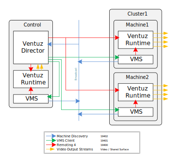

Ventuz has been designed to be able to encapsulate almost all internal business logic inside a scene or scene tree. Nevertheless, it is sometimes necessary to have parts or the entire business logic swapped to another application running on the same or an external system. Such an application is called Control or Remote-Software.
Usually a Control software is controlling a Ventuz Runtime which has no user interface. The Control software will act as the customized User Interface.
Even if it's possible to remote the Ventuz Designer, it is not recommended to do so during Live-Productions. The Ventuz Designer requires much more memory and CPU/GPU resources than Ventuz Runtime and could stall the renderer! It also has UI features that can stop the renderer entirely inadvertently.
Control Software is usually designed to perform one or more of the following tasks:
Even if only one of the tasks is needed it might make sense to use Remoting instead of other types of communication (MIDI, OSC, Database, ...). In general we can differentiate between two types of Ventuz communication:
A mix of these two types is possible as well. If a Control software just performs a few of the above tasks, the Scene could handle others. This flexibility of communication makes Ventuz very convenient and usable in almost all production environments: Digital Signage, MultiTouch, TV Broadcast, Gameshows, ... Multiple Control systems can interact with a single Ventuz machine, or a single control system controls multiple Ventuz systems - almost anything is possible!
Ventuz does not dictate how it should be controlled, it rather provides guides, tools and ideas. The specific solution for a situation has to be designed by the user or integrator. Ventuz is focused on the graphics part only and does not claim to be the software for weather forecasts (or similar). The range of application is too wide to pretend to be able to handle all this - but all applications have one in common: Graphics - that's what Ventuz is for!
Ventuz 4 introduces Remoting 4 as the default remoting protocol that covers the entire remote functionality of Ventuz, its Template Engine and Project and Scene data management. Before generation 4 other protocols were used to control Ventuz. These protocols still exist and are fully functional but they don't give access to the new features of Ventuz 4. The documentation of the Legacy Remoting can be found here.
Remoting 4 is a TCP based protocol that uses Open Sound Control though 3rd party OSC implementation may not compatible to this protocol, because Ventuz uses a request/response ID mechanism and introduces some new OSC parameter types. Text (strings and symbols) is transferred in UTF8 while OSC only supports ASCII for example...
A detailed protocol definition can be found here. This protocol specification is required if one requires Remoting 4 on other platforms than Microsoft.NET, because Ventuz 4 comes with a complete protocol implementation found in Ventuz.Kernel.Remoting4.dll
Remoting4 has been designed to be able to perform the following tasks:
The Ventuz Machine Service (VMS) is an important part in a Ventuz network. It helps remote clients to discover and investigate Ventuz machines within the local network. A remote client doesn't have to utilize VMS, but it may help to switch configurations, start and stop Ventuz Runtime processes. VMS is installed as a Windows service and as long as the administrator hasn't restricted network access to it, a remote client can be sure to find its machine when it is powered.
Typical example of network communication if Director drives a cluster with a local dual pipe preview.

Ventuz 4 is shipped with three different AnyCpu .net assemblies:
Ventuz.Kernel.Remoting4.dll Ventuz.Kernel.Remoting4.Core.dll Ventuz.Kernel.Remoting4.Standard.dll
Thi Ventuz.Kernel.Remoting4.dll is built against the .NET Framework and requires Microsoft.NET 4.5. The .NET Core version requires .NET Core 2.2. The .NET Standard version requires any framework that supports .NET Standard 2.0.
Visual Studio 2012 needs to be installed for all three assemblies because they utilize the new Asynchronous Programming technology from Microsoft. Since Remoting4 commands may need time to complete (load or validate a scene or performing a transition) the remote request are all implemented as Tasks. A Task is a Microsoft helper class that can easily handled by the new C# keywords async and await.
Useful classes defined in Ventuz.Kernel.Remoting4.dll. This table is not complete. It only shows the most important classes for Remoting4. Other types (such as enums and other structs) are almost self explaining. Please refer to the IntellisenseTM XML documentation coming with the SDK.
| General Remoting4 | |
|---|---|
| Ventuz.Remoting4.Cluster | A Cluster is the main communication class for Remoting 4. It manages one or more connections to Ventuz machines within one automation group/cluster. |
| Ventuz.Remoting4.MultiPort | The MultiPort class connects to one or more cluster in order to control multiple cluster instances synchronously. Use a MultiPort if you want to drive multiple clusters in different physical environments but with the same content (e.g. a Videowall and a HD-SDI output) |
| Ventuz.Remoting4.TakeInfo | A TakeInfo gives the controlling application details about a cued template such as number, name and durations of required takes to bring a template into its presented state. |
| Ventuz.Remoting4.JsonObject | A JsonObject is used to serialized and deserialize Ventuz TemplateData object to/from JSON format. This class is not intended to be used to parse standard JSON formats. |
| Scene and Data Model | |
| Ventuz.Remoting4.SceneModel.SceneModel | SceneModel is a technical description of a scene. It contains all template definition, animations and other metadata. |
| Ventuz.Remoting4.SceneModel.DataModel | DataModel is a data schema (like XML Schema) that describes data - not the data itself. |
| Ventuz.Remoting4.SceneModel.AnimationModel | AnimationModel describes an animation within a scene. It conatins information about defined templates and their data as well all details about the animation logic and routing. |
| Ventuz.Remoting4.SceneModel.Validation | This class can be used to validate a SceneModel or a DataModel about its consistency. Only valid models (no errors) should be used for production. Ventuz Designer uses this class to inform the operator about issues in the model definitions. |
| Template Engine | |
| Ventuz.Remoting4.Templates.Routing | This class is able to find a route from one state to another by following the routing rule of an AnimationModel. Ventuz Template Engine uses this class to find the best transition from one template to another. |
| Ventuz.Remoting4.Templates.TemplateHost | TemplateHost is the base class of project, scene and AnimationTemplates. A hierarchical structure of multiple TemplateHosts manages all templates within a Ventuz project. |
| Ventuz.Remoting4.Templates.TemplateData | TemplateData contains the actual data values that matches a DataModel. It can serialize the data along with metadata into several formats including XML and JSON. |
| Tools | |
| Ventuz.Remoting4.ArrayCsvTypeConverter<T> | This class comes with easy conversions of arrays. Especially converting string arrays into properly escaped strings is interesting. |
| Ventuz.Remoting4.StringEncoding | The String encoder is able to escape this for JSON or other formats. ArrayCsvTypeConverter uses this class. |
| Ventuz Machine Service | |
| Ventuz.Remoting4.MachineService.VMSDiscovery | VMSDiscovery can be used to receive VMS heartbeats. |
| Ventuz.Remoting4.MachineService.VMSClient | VMSClient can execute all tasks on a VMS service |
Since .NET Standard and Core have limited APIs compared to .NET Framework, there are some differenes between the assemblies:
| Namespace | Method/Property | Difference |
|---|---|---|
| Ventuz.Remoting4.Internal | Ventuz.Remoting4.Internal.SystemId.GetSlow() | does not return the Ventuz System ID but only a GUID |
| Ventuz.Remoting4.Templates | Ventuz.Remoting4.Templates.Template.ThumbnailArea | returns System.Drawing.RectangleF instead of System.Windows.Rect |
| Ventuz.Remoting4.Templates.Template.Thumbnail | not available because return type is missing in .Net Standard/Core | |
| Ventuz.Remoting4.Templates.Template.BitmapSourceToBinary() | not available because method parameter type is missing in .Net Standard/Core | |
| Ventuz.Remoting4.Templates.Template.BitmapSourceToBase64() | not available because method parameter type is missing in .Net Standard/Core | |
| Ventuz.Remoting4.Templates.Template.BitmapSourceFromBase64() | not available because return type is missing in .Net Standard/Core | |
| Ventuz.Remoting4.Templates.Template.BitmapSourceFromByteArray() | not available because return type is missing in .Net Standard/Core | |
| Ventuz.Remoting4.SceneModel | Ventuz.Remoting4.SceneModel.Validation Constructor | does not validate thumbnails because type is missing in .Net Standard/Core |
| Ventuz.Remoting4.SceneModel.SceneModel.ThumbnailArea | property returns System.Drawing.RectangleF instead of System.Windows.Rect | |
| Ventuz.Remoting4.SceneModel.State.ThumbnailArea | property returns System.Drawing.RectangleF instead of System.Windows.Rect |
The Cluster class is used to establish a general communication to one or multiple Ventuz machines. The approach of this implementation is that it never blocks the calling threads. So if a UI performs actions on this class it either receives and immediate error or a task is issued where the application can wait. A Cluster maintains the TCP connections to multiple machines. Only if all connections are healthy the Cluster is healthy too. If one machine is in disconnected state the entire Cluster won't work. (Later releases of the Remoting 4 SDK will be able to manage fallback and backup situation)
Example of how to create Cluster. This Cluster will be named Wall1 and manages a connection to three machines. After starting the Cluster with Start() it begins to establish connections to the Ventuz machines and collects general information. Collected information is always merged into one single aggregated information. If the individual information does not fit to the rest (e.g. group id mismatch, wrong cluster clock, wrong pipe configuration) the entire Cluster turns into an error or warning state.
Cluster cluster;
public void InitCluster()
{
cluster = new Cluster { Name = "Wall1" };
cluster.AddMachine(new System.Net.IPEndPoint(System.Net.IPAddress.Parse("192.168.1.101"), 19400));
cluster.AddMachine(new System.Net.IPEndPoint(System.Net.IPAddress.Parse("192.168.1.102"), 19400));
cluster.AddMachine(new System.Net.IPEndPoint(System.Net.IPAddress.Parse("192.168.1.103"), 19400));
cluster.Log += cluster_Log;
cluster.ClusterStateChanged += cluster_ClusterStateChanged;
cluster.VentuzInfoChanged += cluster_VentuzInfoChanged;
cluster.Start();
}
public void CloseCluster()
{
cluster.Shutdown();
}
void cluster_Log(object sender, LogEventArgs e)
{
Console.WriteLine("{0}: {1} {2} {3}", cluster.Name, e.Level, e.Module, e.Message);
}
void cluster_ClusterStateChanged(object sender, EventArgs e)
{
Console.WriteLine(cluster.ClusterState);
}
void cluster_VentuzInfoChanged(object sender, VentuzInfoChangedEventArgs e)
{
Console.WriteLine(e.Info);
}
As soon as you have a started Cluster you can begin to get notifications about Ventuz changes (project loaded/unload), Log messages and cluster state changes, as well as begin to call the methods to perform the desired actions.
Many of the methods in Cluster require two parameters:
Once you have established a connection to one or more Ventuz machines, you can adjust the Live Options. Do do so you first have to query the available options by getting the DataModel of the options. Since the actual availability of certain options depends on the machine and AV configuration, it is necessary to query these options every time you establish a connection. The DataModel of the live options doesn't change until Ventuz is restarted with another configuration.
DataModel liveOptionsDM = (DataModel)XamlReader.Parse(cluster.OptionsDataModel(null).Result);
If the Result property of the Task object is queried, the calling thread will block until the result becomes available or an exception occurs. The result is a string that contains the XAML representation of the DataModel which is passed to the System.Windows.Markup.XamlReader. A instance of DataModel is returned. Read more about DataModels here.
Example Live Option DataModel (XAML)
<DataModel xmlns="http://www.ventuz.com/Ventuz/SceneModel/1.0">
<Trigger Name="Save" Label="Save" Description="Save the current live options" Mode="W" />
<Group Name="VZ" Label="Ventuz Options">
<Integer Min="0" Max="2147483647" Name="ID" Label="ID" Mode="RW" />
<Enum Elements="Videowall" Name="RenderSetup" Label="Render Setup" Mode="RW" />
</Group>
<Group Name="REN" Label="Rendering Options">
<Boolean Name="Wireframe" Label="Wireframe" Mode="RW" />
<Boolean Name="Stats" Label="Show Statistics" Mode="RW" />
<Boolean Name="InputDiag" Label="Show Input Diagnostics" Mode="RW" />
<Boolean Name="BoundingBoxes" Label="Show Bounding Boxes" Mode="RW" />
<Boolean Name="Alpha" Label="Show Alpha/Key" Mode="RW" />
</Group>
<Group Name="AVC" Label="AV Options">
<Group Name="Global" Label="Global Options">
<Integer Default="0" Min="0" Max="10000000" Name="SoftwareWatchdogTimeout" Label="Software Watchdog Timeout" Mode="RW" />
<Boolean Default="False" Name="LogVideoEngineState" Label="Log Video Engine State" Mode="RW" />
</Group>
<Group Name="Streams" Label="Stream Options">
<Group Name="SSF_OUT_0" Label="Shared Surface">
<Enum Elements="None, Low, Medium, Best" Name="Multisampling" Label="Multisampling" Mode="RW" />
<Color Default="127, 0, 0, 32" Alpha="True" Name="BorderColor" Label="Border Color" Mode="RW" />
<Boolean Default="True" Name="KeyPremultiplied" Label="Additive Key" Mode="RW" />
</Group>
</Group>
</Group>
</DataModel>
Example of setting the !Wireframe live option:
cluster.Option(".REN.Wireframe", true, null);
Find more details about constructing paths to DataItems in Template Engine documentation.
Every Ventuz Project can contain user defined Project Data. This data also defines its DataModel that can be queried as soon as a project is loaded. DataItems can be gotten or set individually or the entire set of data can be transferred. In that case a string representation of TemplateData must be sent. See here.
DataModel projectDM = (DataModel)System.Windows.Markup.XamlReader.Parse(cluster.DataModel(null).Result);
Example of setting a project DataItem:
cluster.ProjectDataItem(".Home.Score", 5, null, null);
Every time Ventuz reinitializes its output pipe the Cluster sends a PipeInfoChanged event. The PipeInfo contains information about type, resolution and timing of all output pipes. This information also includes a Direct3D Shared Surface handle, if the output is not DirectX. Only outputs to SDI, iVGA or Shared Surfaced can share the output.
Sharing surfaces is only possible if the other peer process runs on the same system and uses the same logical GPU (usually default ordinal zero).
You also can get snapshots of the current pipe output by calling the SnapShot(...) method. Please note that taking snapshots may interfere with the rendering performance. So it is not a good idea to take snapshots while you are on-air!
If a Cluster is used you have to decide how you want to drive Ventuz. There are two major ways of doing this:
If you follow the approach to manage the loading, unloading and controlling scene manually it is important to know how Ventuz manages scenes internally. Every scene loaded to memory is loaded by another scene. So how does the first scene get loaded? There is no scene that can load the first one! The answer is simple. A project defines its Layout Scene which is loaded by Ventuz when a project is loaded and initialized. If no custom layout scene is defined Ventuz creates a so called Default Layout - a scene that only consists of one single Scene Port Node. So now we have a scene that is able to load other scenes.
Every scene in memory gets an Instance ID (short IID) to uniquely identify an instance. The Scene Identity - the filename - of a scene is not unique, because one could load the same scene into memory multiple times. The IID stays unique as long a scene resides in memory. If a scene is unloaded from memory its IID becomes free and could be used by another freshly loaded instance. Since the IID is a random code this happens very rarely. An IID is a 32 integer number that contains four ASCI characters (FourCC) from A to Z, so the maximum number of unique IID's generated is from AAAA to ZZZZ (264 = 456,976 possible IID's). An IID integer 0x41424344, for example, is also expressed as ABCD.
How to know the IID for the Layout scene if I didn't load that scene? Every configured render output is called a Render Pipe. Every render pipe loads its own instance of the layout scene defined in the project (or creates its default layout respectively). Every layout scene in memory gets its unique random IID but a special IID (or PipeID, PID) takes place: If an IID is used to address a scene which contains digits, the fourCC is not interpreted as characters. Instead, it is parsed as a decimal number: 0000 resolves to 0, 0001 to 1 and so forth. The actual decimal value of this PID is addressing the layout scene of its pipe output.
This structure Ventuz.Remoting4.IID implements conversion from Int32 to/from IID or String representations.
IID's used by a Cluster that is connected to multiple machine are so called virtual IID's. They do not really exist on any Ventuz Runtime - they are used as an aggregate of all individual IID's on each remoted system.
To use the Layout scene of pipe 0 to load a scene name "NameSuper" use the following line of code:
FlaggedIID iid = cluster.Load("0000", "NameSuper", LoadFlags.New | LoadFlags.Existing, null).Result;
This line of code issues a load scene request on the Cluster. The LoadFlags New and Existing specifies that an existing (unused) instance can be used or if no existing instance is available a new instance is allowed to be loaded. Reading the Result property right away make this call a synchronous call.
The returned FlaggedIID contains the IID of the scene where the Flag property indicates if the scene is new (true) or re-used (false).
If the call returns FlaggedIDD the scene is not loaded yet! The Ventuz system is loading the scene in background and the Cluster sends SceneStatusChanged event for the corresponding IID. As soon the SceneStatus becomes Loaded (hex 0x0100) the scene can be used. If any errors occure in this load process the IID keeps valid but the scene status shows an error. Invalid scenes should be released as well to let Ventuz forget the IID for it!
To unload a scene the Release command on the IID of the scene to unload has to be issued. Please note that a scene is unloaded from memory, if you (the remote client) releases the scene and the the is not assigned to a port in another scene.
Use the DataItem method to get/set values on the exposed data of the scene. The section Template Engine describes the addressing technique used to access the DataItems with an scene.
This command set the DataItem of the Scene Data:
cluster.DataItem(iid.IID.Value, ".folder.text1", "Hello World!", null, null);
To set a scene into a port - in other words: to activate a scene - you have to address the ScenePort where this scene should be rendered in. The simplest way to achieve this is to address port 0 of layout scene in pipe 0, because this port always exists. (except a custom layout scene locks port 0)
cluster.PortStatus("0000", 0, true, iid.IID.Value, null, null);
It is always a good idea to validate a scene right after setting all DataItems and before activating it. To do this issue a Validate command and watch the SceneStatus until it reached the validated status (hex 0x0200)
DataModel is a user define description of data. It is comparable to XML Schema, describing names, types, description, value limits and the entire structure of data. Ventuz uses DataModels for Live Options, Project and Scene Data as well as for Data defined in Animation nodes within a scene.
A DataModel is a XAML based document that can either be parsed by any XML tool (like XPath or XSLT) or by the XamlReader to load an instance of the DataModel class defined in the SDK. The user can manually 'walk' through the data definitions to dynamically create a UI based on the description. Ventuz Director uses XSLT to transform a DataModel XML into a WPF-XAML that represents the property editor.
The best practice to use a DataModel is to attach it to a TemplateData instance. TemplateData acts as a storage of hierarchical data and metadata. It can either have a static data structure when associated with a DataModel or a dynamic structure (no DataModel association).
A TemplateData instance can be associated with a Namespace URI. This uri is important for the Template Engine to address the data within Ventuz. This URI follows the template addressing rules described in Template Engine documentation.
TemplateData has two storages:
An instance of TemplateData can be serialized and deserialized in three different text based formats:
The simplest way to create TemplateData and convert it to text is:
!cs
// create a TemplateData instance without associated DataModel but with custom namespace
TemplateData td = new TemplateData(new Uri("http://www.mycompany.com/mynamespace"));
// assign some metadata
td.MetaData.MyPersonalTag = "my metadata string";
// create some data items
td.Data.Headline = "HEADLINE";
td.Data.Subtitle = "SUBTITLE";
td.Data.Folder.PositionX = 2.0f;
td.Data.Folder.PositionY = 3.0f;
// output as serialized string
Console.WriteLine(td.ToString(Ventuz.Remoting4.Templates.DataFormat.XML, DataOptions.All));
Console.WriteLine(td.ToString(Ventuz.Remoting4.Templates.DataFormat.JSON, DataOptions.All));
Console.WriteLine(td.ToString(Ventuz.Remoting4.Templates.DataFormat.BIN, DataOptions.All));
This code produces the following output:
XML:
<?xml version="1.0" encoding="utf-16"?>
<VTD ns="http://www.mycompany.com/mynamespoace" MyPersonalTag="my metadata string">
<Headline>HEADLINE</Headline>
<Subtitle>SUBTITLE</Subtitle>
<Folder>
<PositionX>2</PositionX>
<PositionY>3</PositionY>
</Folder>
</VTD>
JSON:
{
"@": "http://www.mycompany.com/mynamespoace",
"@MyPersonalTag": "my metadata string",
"Headline": "HEADLINE",
"Subtitle": "SUBTITLE",
"Folder": {
"PositionX": 2,
"PositionY": 3
}
}
BIN:
VlREMSAlaHR0cDovL3d3dy5teWNvbXBhbnkuY29tL215bmFtZXNwb2FjZUESbXkg bWV0YWRhdGEgc3RyaW5nDU15UGVyc29uYWxUYWdhCEhFQURMSU5FCEhlYWRsaW5l YQhTVUJUSVRMRQhTdWJ0aXRsZYAGRm9sZGVyagAAAEAJUG9zaXRpb25YagAAQEAJ UG9zaXRpb25Z////
Since the properties Data and MetaData are implemented as dynamic objects, the storage (or properties) required for the addressed DataItems is created on-the-fly. As soon as a storage is created by its first write access, the name and type of it has been defined and cannot be changed later. The dynamic creation of storages is only possible because this TemplateData instance is not associated with a DataModel which defines a static model of data.
If such a DataModel association exists, only defined DataItems can be addressed through the dynamics. Any access to a non existent member will throw an exception.
The available types of DataItems are also described on the Template Engine page.
Is is important to know that one special property type TemplateData exists to create nested instances of TemplateData -> one instance contains another instance. The DataOptions flags specifies if a serialization write all inner template data or not.
The associated !Namespace URI is also written as an attribute in all formats. In XML the xmlns is not used on purpose, because other formats (JSON) do not support namespaces. In XML we use the attribute ns. In JSON the namespace is written in a special symbol named "@" where all other metadata gets a leading @ sign. This is a Ventuz convention and not a JSON standard!
The big advantage of using the TemplateData class is that it automatically manages the data consistency and serialization. Also it provides several useful functions to iterate through all data items, construct absolute paths and send property change notifications whose are WPF compatible!
There is another constructor of TemplateData taking a Template instance as parameter. This object is acquired when using the TemplateHost class. See next section.
Manual scene management can become very complex and difficult to handle. To improve the flexibility of using Ventuz for template graphics, the new Template Engine takes care of loading and unloading scenes, applying the right data and triggering the correct transition from one template to another.
The current version of Ventuz only can control the Template Engine via Remoting 4. Later revisions of Ventuz may come with nodes that allows scenes to drive template-transitions from within the scene.
The actual remoting of the Template Engine has been reduced to a few commands executed on a scene port:
For further details about controlling the Template Engine via Remoting, please refer to the Ventuz API and SDK documentation found in the Windows Start Menu.